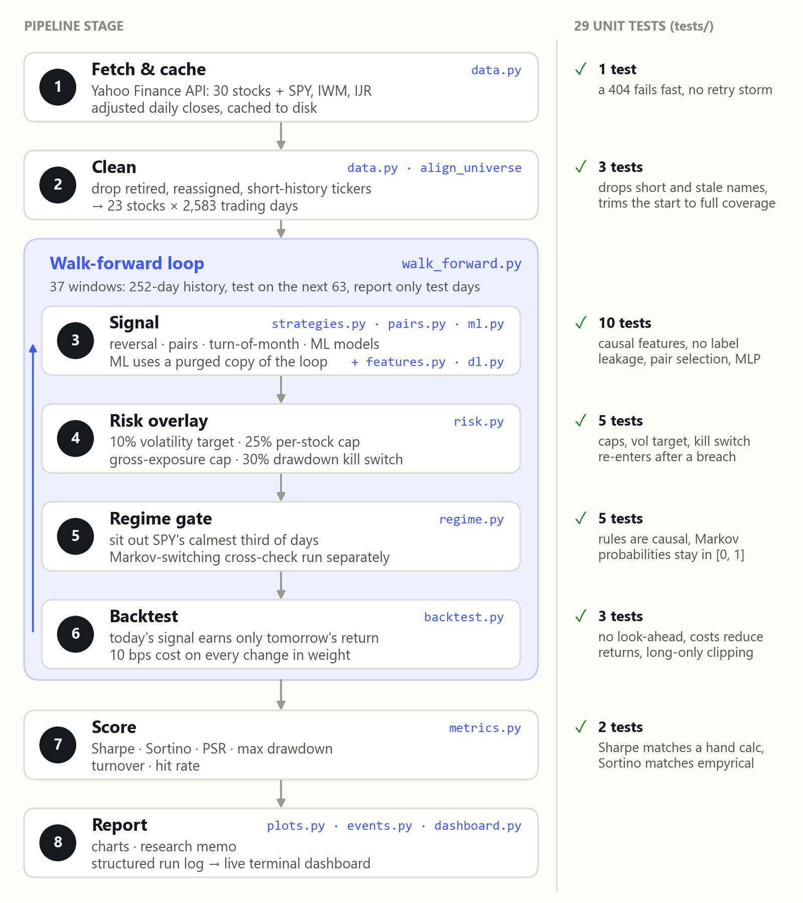
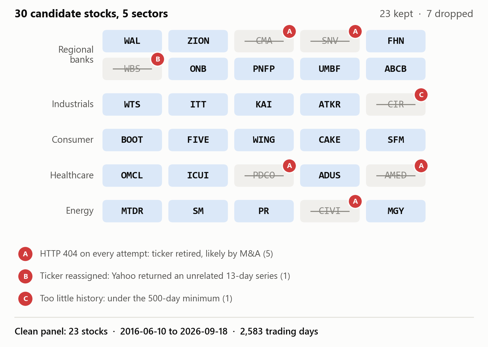

Quant research · Solo · 2026
Stress-testing trading strategies until only one survived
I led a study of trading ideas on 10 years of real stock prices. The survivor, a risk-controlled reversal strategy, earned a Sharpe ratio of 0.44 (return per unit of risk) with a worst drop of 16.8%, half the S&P 500's, but returned less than the index. The failures taught me to trust only results that hold across settings.
- My role
- Research lead: set the goals and pass bars, signed off on every stage
- Team
- Solo
- Timeline
- Sep 19 to 20, 2026
- Tools
- Python, pandas, scikit-learn, PyTorch, statsmodels
- Raw reversal signal (buy recent losers): Sharpe 0.45, but a 75.6% worst drop.
- Risk overlay: worst drop cut to 25.5%, Sharpe halved to 0.23.
- Sitting out the calmest markets: Sharpe 0.44 at a 16.8% drop, the final strategy.
- Holding the S&P 500 (SPY): higher Sharpe (0.85), deeper drop (33.7%).
My contributionWhat I did

- Set the goal: a strategy a small account could run, tested the way a quant researcher would before risking money.
- Directed an AI coding agent (Claude Code) to build a Python pipeline: data cleaning, a realistic backtest, walk-forward testing and a risk overlay.
- Directed four follow-up studies, from volatility filters to ML signal searches; a library survey caught a wrong Sortino formula.
- Set the bar the ML search had to clear, before it ran.
- Signed off on each stage through three pull requests, backed by 29 unit tests.
MotivationWhy it mattered

Objective: test whether a small account can capture a well-documented market pattern too small for large funds, following a quant researcher's process from a literature hypothesis to paper trading.
Why it is hard: backtests are easy to fool. Tune on the reported data, or leak future prices into a signal, and results vanish live. Only out-of-sample results count.
- Capital
- Sized for a few thousand dollars; no leverage
- Data
- Free public prices (Yahoo Finance)
- Costs
- 10 bps (0.10%) per trade, likely optimistic
- ML bar, set in advance
- Clearly beat SPY, or very stable with a small worst drop (coded as: Sharpe 25% above SPY's, or worst drop under 10% with Sharpe above 0.3)
ResultsHow it measured up
- Final strategy (yellow): 3.6% a year with shallow dips.
- March 2020: the same 23 stocks, simply held (green), bottomed 57% below their 2018 peak.
- SPY: far more growth, with a 33.7% drawdown.
- Best ML model, same risk controls: lost money. Rejected.
- ✓ MetIdea from the literature. Short-term reversal held up out of sample (Sharpe 0.45).
- ✓ Met, with limitsRealistic backtest. Signal delay and trading costs, but flat costs and survivorship bias.
- ◐ PartlyOut-of-sample test. Some filter settings were picked on the same data; probabilistic Sharpe 0.91, short of 0.95.
- ✓ MetHonest reporting. Every failed idea is documented.
- ○ Not metML search bar. The best model lost money once risk-managed and beat only 4 of 5 shuffled-label noise runs.
- ○ Not metBeat the market. SPY had a higher Sharpe (0.85). Next step: a quarter of paper trading.
What I learned
One good number is not evidence. A volatility filter that scored 0.32 at one lookback flipped to −0.06 at another (Figure 5). I now check results across more than one reasonable setting, and test risk code on long, real data: three silent bugs showed up only in the full backtest (see Methods).
Technical detailsHow it was tested
- “Skip the calmest third of days” held at both (0.44, 0.42): kept.
- “Trade only the most volatile third”: 0.32, then −0.06. Rejected.
- A Markov-switching model of market states: 0.13, below no gate (0.23).
- Worst: Dec 2019 to Mar 12, 2020, as the COVID crash began.
- Mid-2023: the gate kept the strategy in cash.
Methods in depth
Strategy and risk controls
Short-term reversal is a decades-old finding (Jegadeesh 1990; Lehmann 1990): stocks that fell hardest over the last few days tend to bounce. Each day the pipeline ranks the 23 stocks by 3-day return and holds the five biggest losers at equal weight, long-only. The risk overlay scales the book toward 10% annualized volatility (20-day lookback, never above 1x), caps any one stock at 25% and total exposure at 100%, and goes to cash if the signal's own drawdown passes 30%, re-entering once it recovers to within 10%. The regime gate ranks SPY's 20-day realized volatility against its trailing 252-day history and stays out on days in the calmest third, which left the strategy active on 63% of out-of-sample days.
Pipeline and data
- Cleaning (stage 2 in Figure 2): the pass dropped 7 of 30 tickers and logged why (Figure 3), leaving 23 stocks × 2,583 trading days.
- The loop: within each window, parameters never see that window's test data, and only test-day returns are reported.
- Bugs the real data exposed (stages 4 and 6): the first drawdown kill switch fired once in December 2018 and then sat in cash for the remaining seven years, producing a fake-good Sharpe of 0.46. The first fix flapped on and off repeatedly, and a scoring step silently erased the overlay's cash positions. All three surfaced only when the full multi-year backtest ran and the exposure numbers were checked for sense; all three are fixed, and the kill-switch bugs have regression tests. Cross-checking against the empyrical library also caught a wrong Sortino formula.
Validation
- Walk-forward: 252-day history and 63-day test windows, stepping by 63 days, so the 37 test windows tile mid-2017 to 2026 with no gaps or overlap. The headline strategy runs the same fixed parameters in every window; the history slice is used only where a method needs fitting (the nested tuning check, the ML models, pair selection, the Markov model).
- Nested tuning check: a 3 × 2 grid (lookback of 2, 3 or 5 days × 15% or 25% of names) picked on each training slice only. It made results worse (Sharpe 0.45 to 0.09), evidence that the untuned default is not a lucky draw.
- Gate lookback check (Figure 5): the kept gate scored 0.44 with a 252-day volatility history and 0.42 with a 504-day one. The 504-day version's 0.42 includes Jun 2017 to Jan 2018, before that gate had enough history, when it defaulted to always on; on the days it operated it scored 0.31 (252-day gate: 0.44, no gate: 0.13, same days).
- Probabilistic Sharpe Ratio (Bailey and López de Prado 2012): the chance the true Sharpe is above zero, given sample size, skew and fat tails. The final strategy's is 0.91.
- ML guardrails: 15 trailing-window features (momentum, volatility, RSI, moving-average gap, volume surge, cross-sectional ranks), with a unit test checking that changing future prices never changes any earlier feature value. Training rows whose forward-return label reaches into the test window are purged (López de Prado 2018). Tree-model hyperparameters were fixed and conservative before looking at results; the neural net got only a small, pre-registered 2 × 2 grid.
- Shuffled-label negative control: the best tree model, a random forest predicting 10-day returns, was retrained five times on shuffled labels, which destroys any real signal. Its real Sharpe of 0.35 sat at only the 80th percentile of those noise runs (noise mean −0.03); the best neural net sat at the 75th percentile of four runs. A real edge should clear something like the 95th. With so few runs, this is a strong hint, not a precise p-value.
- Bigger models did not find more signal: the other two model types scored lower still, and the neural net did worst once risk-managed (Sharpe −0.18). That points to the information in daily price data, not the model, as the bottleneck.
Against the market
Before the gate, the strategy's returns were 0.70 correlated with holding the same 23 stocks (the gate only changes when that book is held), so it is not a diversifier. It would also fail the ML search's bar, which needed a Sharpe above 1.06, or a worst drop under 10% with a Sharpe above 0.3.
Results table (the data behind Figure 1)
| Strategy (out of sample, after 10 bps costs) | Sharpe | PSR | Max DD |
|---|---|---|---|
| Reversal + risk overlay + regime gate (final) | 0.44 | 0.91 | −16.8% |
| Reversal + risk overlay | 0.23 | 0.76 | −25.5% |
| Reversal, raw signal | 0.45 | 0.91 | −75.6% |
| Reversal, re-tuned each window | 0.09 | 0.61 | −78.4% |
| Pairs trading, regional banks | −0.02 | 0.48 | −20.6% |
| Turn-of-month, SPY/IWM/IJR | 0.12 | 0.64 | −27.8% |
| Random forest (10-day), risk-managed | −0.08 | n/a | −41.3% |
| Neural net (MLP), risk-managed | −0.18 | n/a | −50.8% |
| Random forest (10-day), no risk overlay | 0.35 | 0.85 | −83.1% |
| Random forest (5-day), no risk overlay | 0.16 | 0.69 | −83.9% |
| Ridge regression (5-day), no risk overlay | 0.09 | 0.61 | −80.3% |
| Gradient boosting (5-day), no risk overlay | 0.06 | 0.58 | −75.1% |
| Neural net, best of 4 configs, no risk overlay | 0.15 | 0.68 | n/a |
| SPY buy & hold, same dates | 0.85 | n/a | −33.7% |
The other three neural-net configurations scored 0.07, 0.10 and −0.13 before risk controls. The other regime filters are in Figure 5.
Known limits
Survivorship bias is not corrected: dropping retired tickers means the backtest only sees companies that still exist, which flatters every result. The flat 10 bps cost probably understates spreads on the smallest names, and the backtest assumes trades fill at the closing price. Sharpe ratios use a 0% risk-free rate and idle cash earns nothing in the backtest, so the Sharpe is not an excess return over T-bills. The 37 windows are not 37 independent bets, because market regimes like the 2020 crash span several of them. Finally, some design choices (which volatility filter to keep, how loose to set the kill switch) were made after seeing backtest results on the same data, so the 0.44 likely overstates what to expect live; the memo calls for a third lookback window and at least a quarter of paper trading first.